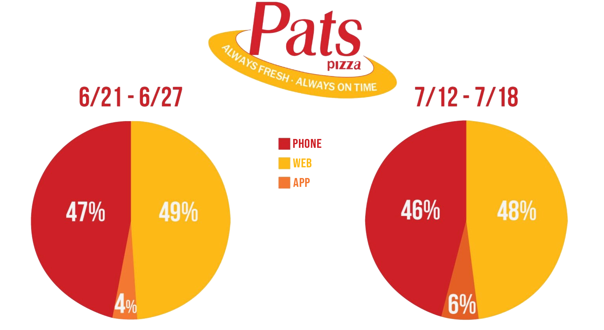
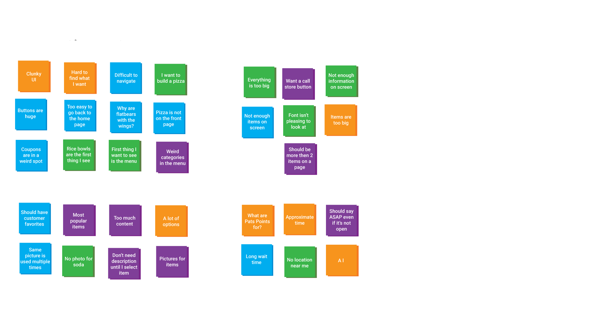

Pats Pizza
Research

-
I decided to make a pie chart to see different ways that people
were ordering from Pat's Pizza.
-
After seeing that an average of 5% of people were ordering from the mobile app.
I knew I had to do something.
Why?
-
Let's be real. When you order food delivery, how do you do it?
Most likely, you use apps like DoorDash, Uber Eats, or Grubhub.
My goal was to make the Pat's app as accessible as those apps.
With the continuous rise of food service apps,
I believe it is a
matter of time before Pat's Pizza customers begin to switch to
other food options if they can't order their food
as easily as they
can with other restaurants.
My goal was to get app usage to about 25%. In order to do so, I needed
to
figure out what was preventing people from using our app.
Survey
-
I asked fellow students at University of Delaware to use the existing
Pat's Pizza app to order anything that they wanted and recorded
their comments.
Afterwards, I also asked them the following questions:
-
How was your overall process with the app?
- Did you find anything difficult?
- Did it take you longer than expected to order your meal?
- What's one thing you would change about the app?
- Do you have any final comments?
Affinity Mapping
-
In order to better visualize user's comments about the existing Pat's Pizza app,
I created an affinity map.
I took comments from 4 individuals
who attend UD who have never used the app before.
